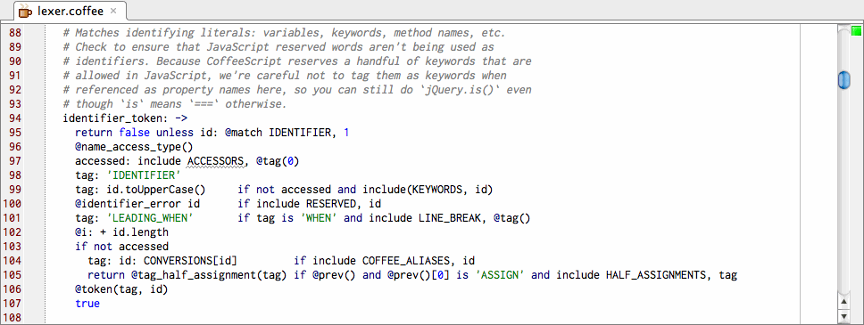

coffeescript-idea
CoffeeScript
Download
Issues
Source
coffeescript-idea is a plugin for IntelliJ IDEA and RubyMine that provides basic syntax highlighting for
CoffeeScript. It is licensed under the Apache License 2.0.

Download
Version 0.1 was made for IntelliJ 9.0.1 Community Edition and RubyMine 2. It is compatible with CoffeeScript 0.5.4
Get it here.
Installation
-
Copy the jar to your IDEA based IDE's plugins folder.
- IntelliJ 9 Community Edition: ${HOME}/Library/Application Support/IntelliJIdea90CE
- RubyMine 2: ${HOME}/Library/Application Support/RubyMine20
- Restart your IDEA based IDE.
- check that .coffee files should now have syntax highlighting.
Feedback
If you go to the trouble to try this plugin out, please consider leaving a message on the github issues page with any information about your experience trying it out.
Release History
0.1
- syntax highlighting support for CoffeeScript 0.5.4
Thanks
Thanks to Jeramy Ashkenas and all contributors to the CoffeeScript project.
Source
You can browse the source code at the project's github repository
You can download this project in either
zip or
tar formats.
You can also clone the project with Git
by running:
$ git clone git://github.com/yeungda/coffeescript-idea